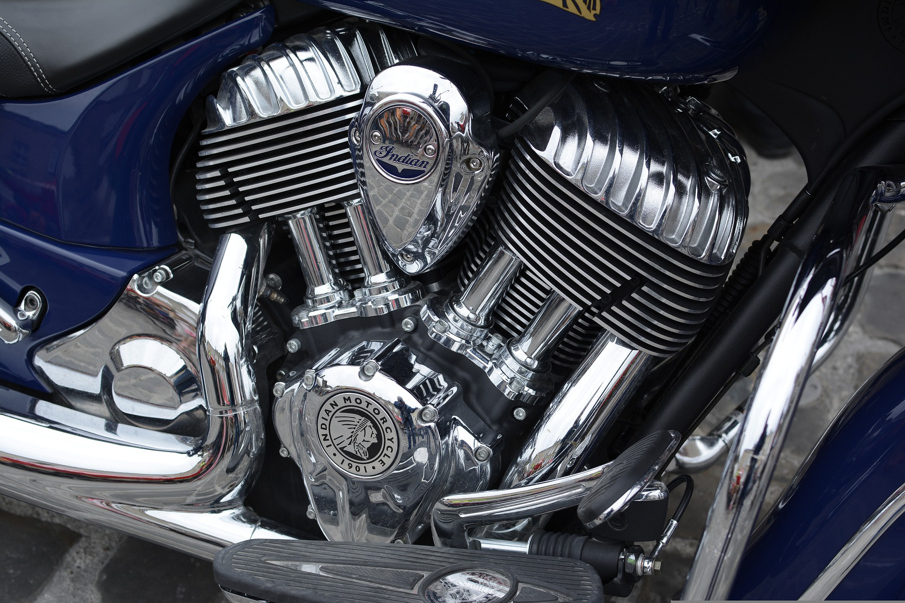

Service Full

- Cambio de aceite.
- Regulación de embrague.
- Control y regulación de frenos (si es a Tambor).
- Servicio en transmisión (Limpieza y lubricación de cadena).
- Calibración de neumáticos.
- Chequeo de luces.
- Calibración de Carburador.
- Control del líquido de frenos.
- Control de acido de la batería.
- Control y cambio de bulbos de freno.
- Ajuste de eje de ruedas.
- Ajuste de motor.
- Lavado de unidad.
Si usas tu moto con frecuencia, y la cuidas como un tesoro el SERVICE FULL es para vos. Se revisaran a fondo cada detalle para que tu moto funcione como corresponde.